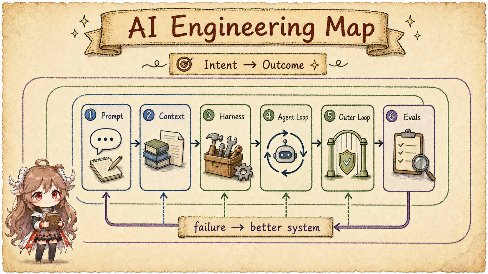

AI Engineering · 七篇路线
不要追新名词，先看完整系统。
Prompt、Context、Harness、Loop 不是一条替代链，而是同一套 agent 系统在不同边界、不同时间尺度上的工程表面。本系列从一次任务走到跨次运行，再走到 eval 驱动的系统更新。

阅读路线
从一次推理，走到系统生命周期
第一篇 · MAPPrompt、Context、Harness、Loop 不是四代产品
先给所有概念划边界、定时间尺度，再沿一条真实任务分清负责人。
开始阅读 → 第二篇 · PROMPT把 Prompt 当作版本化的行为接口从“写一句好话术”转向契约、优先级、示例、工具语义与回归管理。
开始阅读 → 第三篇 · CONTEXTContext 是每次推理的工作集选择、装配、预算、压缩、记忆与检索，决定模型此刻实际能依据什么。
开始阅读 → 第四篇 · HARNESSHarness 是模型之外的运行时工具、沙箱、权限、状态、事件、恢复和可观测性共同托住一次运行。
开始阅读 → 第五篇 · AGENT LOOPAgent Loop：让一次运行正确收敛模型—工具—观察循环怎样管理停止、预算、错误与人工介入。
开始阅读 → 第六篇 · OUTER LOOPLoop Engineering：把多次运行连成工作系统触发、选工、执行、验证、持久化、重试与升级，跨越单次会话。
开始阅读 → 第七篇 · EVALSEvals 与反馈：把“看起来完成”变成可验证结果定义结果真值、构建评测集、定位失败层，并安全地推动系统更新。
开始阅读 →